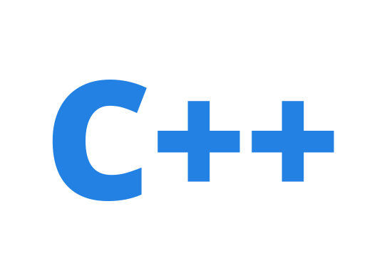

C++学习笔记

基础学起,从汇编查看C++的本质
Content:
Audience
It is only a tutorial for LAYMAN, but for FRESHMAN. You should have the basic experiences about programming, heard about the concpets of OOP.
Note
This is not an all-encompassing guide about C++.
I will never introduce all the core concepts, associated knowledge about C++, it is such a huge project, I only provide the introduction about core features and some auxiliary library features that frequently used in real world.
Why I only introduce C++ 11? Because the C++ 14/17/20 are not widespreadly used now. You can check the C++ Compiler Support for more information about the support state of different C++ standards.
Note
You should prepare some tools for compiling the samples, the tools what I used for this serial are list in appendixes.
Note
Some samples maybe dependent on the 3rd-party library(gtest), I have included it in the code package. So I can shou the features clearly.